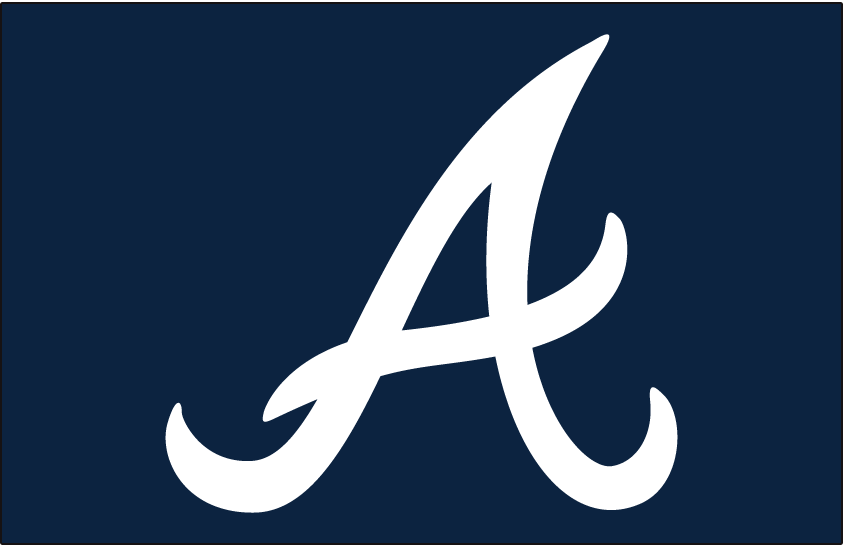
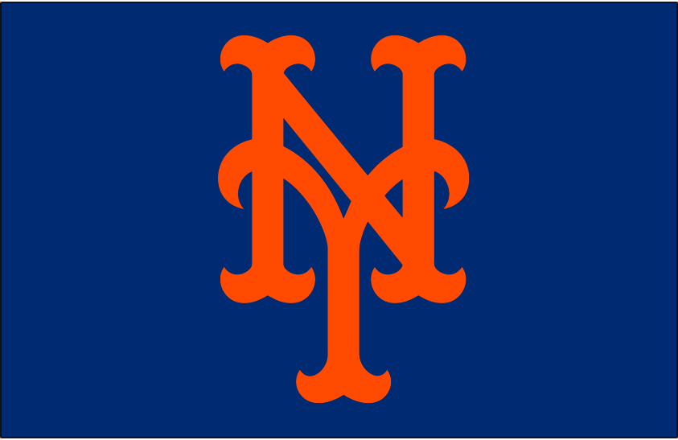
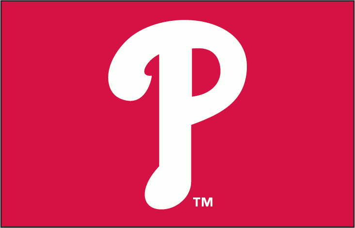
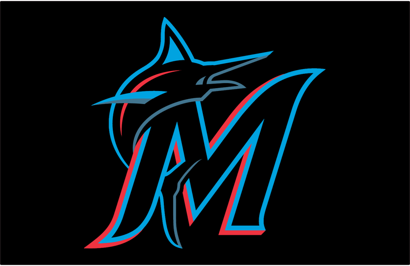
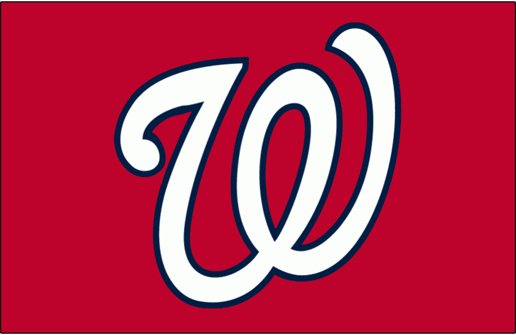

The NL East started in 1969. It started with the New York Mets, Philadelphia Phillies, Montreal Expos, Pittsburgh Pirates, St. Louis Cardinals, and Chicago Cubs. The Florida Marlins and Atlanta Braves joined the division in 1993 and 1994 respectively. The Pirates, Cardinals, and Cubs moved to the NL Central in 1994.
In the 1995 re-alignment, the Braves won 11 straight NL East titles from 1995-2005. They won the World Series during their first division title and lost two others. They won again in 2021. The Expos became the Washington Nationals in 2005. The Mets broke the Braves' streak of division titles in 2006 but lost the National League Championship Series to the St. Louis Cardinals.
The Phillies then won 5 straight division titles from 2007-2011, winning the World Series in 2008 and losing in it the next season. The Nationals won the division in 2012 but were upset by the St. Louis Cardinals in the National League Division Series. The Mets won their first division title in 9 years in 2015, where they lost to the Kansas City Royals in the World Series in 5 games. Since then, the Nationals won the division in 2016-17 and won the World Series as a wild card in 2019. The Braves have won 5 straight division titles dating back to 2018.
2022 division standings:
| Place | Team | Record | Postseason |
|---|---|---|---|
| 1 | Atlanta | 101-61 (H2H over NY Mets) | Lost NLDS (Philadelphia) |
| 2 | NY Mets | 101-61 | Lost NLWCS (San Diego) |
| 3 | Philadelphia | 87-75 | World Series in progress (Houston) |
| 4 | Miami | 69-93 | Did not qualify |
| 5 | Washington | 55-107 | Did not qualify |